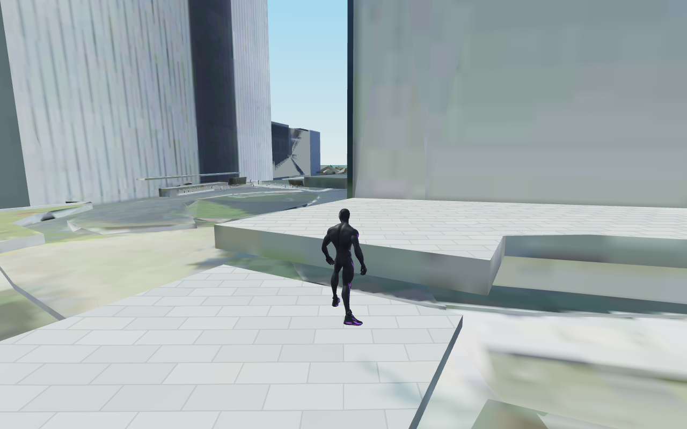
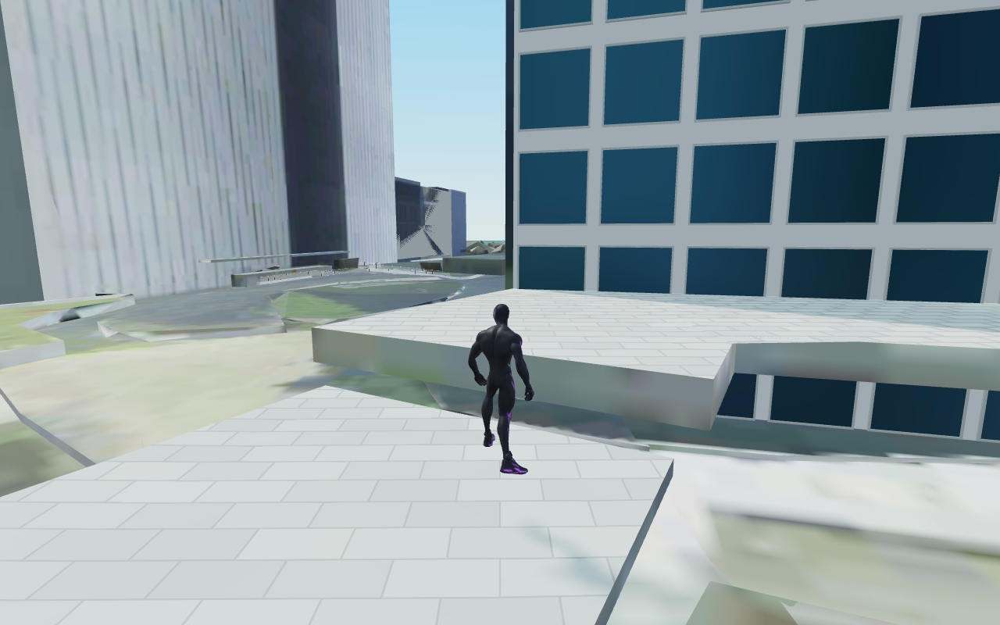
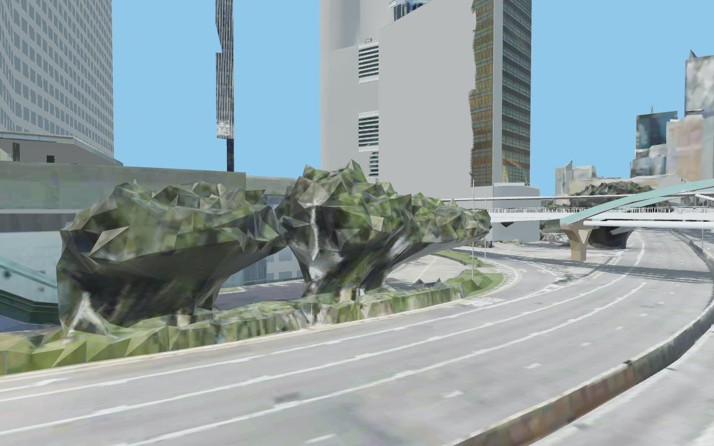
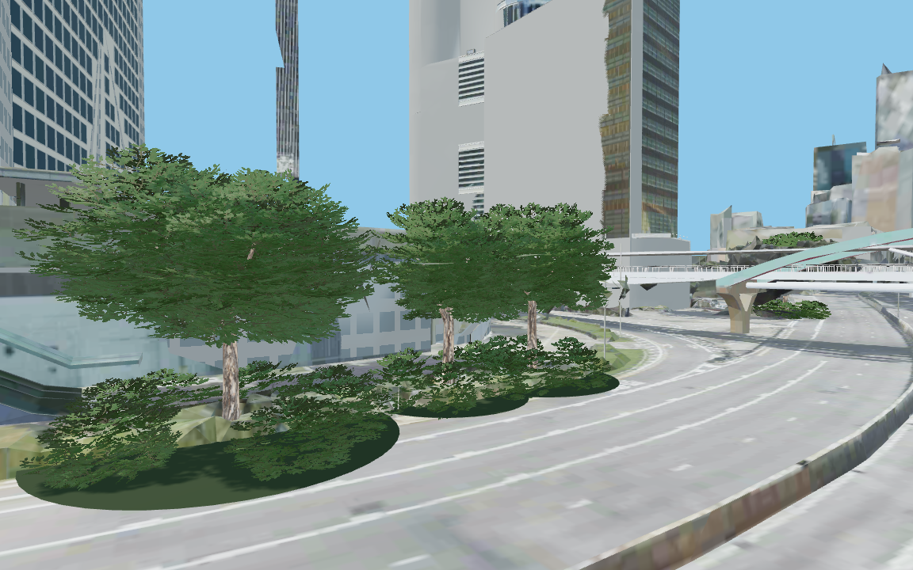

홍콩 시작 구역 · 정밀 모델 교체
같은 카메라와 타일 상태에서 모델의 표시만 전환한 실제 렌더링입니다. 슬라이더로 비교하세요.
외벽 6면유리 패널 1,967개입체 창틀 7,868개수목 7곳 · 잎 군집 140개
시작 구역 외벽


교체 전교체 후
수목 근접 검토


교체 전교체 후
수목 비교는 별도 관찰 카메라입니다. 실제 플레이는 이동·점프·스윙·벽 오르기·차량 조작으로 검증했습니다. 홍콩 전체를 교체한 결과는 아니며, 범위 밖의 저해상도 사진과 일부 지면 요철은 남아 있습니다.
상세 보고서 · 실제 플레이 기록 · 타일 500 오류 복구 검사